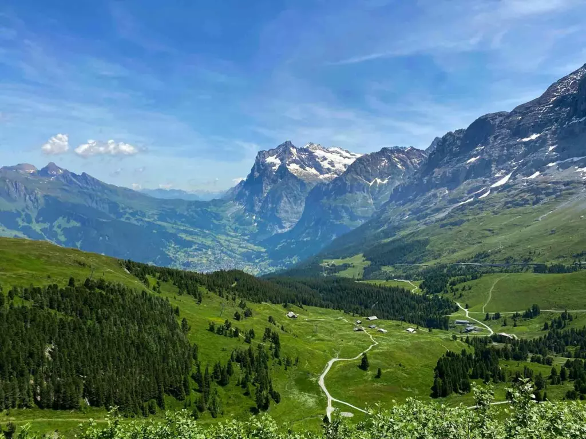
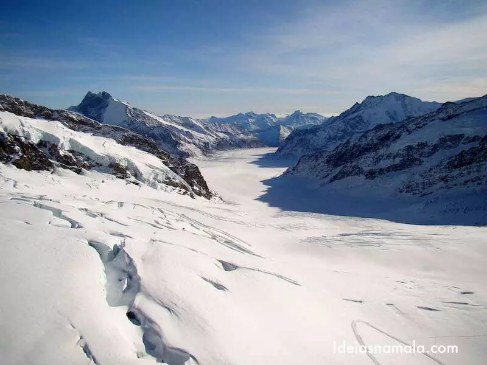

Lauterbrunnen
Lauterbrunnen, conhecido como o "vale das 72 cachoeiras", é um charmoso vilarejo nos Alpes Suíços (Cantão de Berna) famoso por suas paisagens de conto de fadas, cachoeiras dramáticas como a Staubbach e paredões rochosos imponentes. É um destino ideal para natureza, trilhas e base para explorar o Jungfrau, Schilthorn e Grindelwald
Características
Situado entre imponentes penhascos de calcário de 800m, o vilarejo pitoresco é caracterizado por chalés de madeira, paisagens de contos de fadas, esportes de aventura (base jump, parapente) e fácil acesso a picos como Jungfrau
- Impressionante: Situada no fundo de um vale em forma de U, a vila é cercada por penhascos verticais de cerca de 1.000 metros de altitude.
- 72 Cachoeiras: O nome Lauterbrunnen significa "fontes barulhentas". A cachoeira Staubbach é a mais icônica, visível do centro da vila, enquanto as Trümmelbachfälle são 10 quedas d'água glaciais dentro da montanha.
- Inspiração Épica: A paisagem bucólica serviu de inspiração para J.R.R. Tolkien criar a cidade fictícia de Rivendell (Valfenda) em O Senhor dos Anéis.
- Ponto de Partida Alpino: É a base para explorar a região de Jungfrau, com acesso rápido a Wengen, Mürren, Schilthorn e ao vilarejo sem carros de Gimmelwald.
- Atividades e Clima: Popular no verão para caminhadas, parapente e trilhas. No inverno, transforma-se em um cenário nevado com proximidade a estações de esqui.
- Acessibildade: A vila é facilmente acessível de trem a partir de Interlaken.
Visite o site oficial de Lauterbrunnen
Pontos Turísticos
Wengen e Kleine Scheidegg
Wengen é uma pitoresca vila de montanha na Região de Jungfrau, dentro do Oberland Bernês.
Fica a 1274 metros de altura, num terraço protegido do vento, e oferece provavelmente a vista mais bonita do Vale Lauterbrunnen. No inverno, é palco da corrida de esqui Lauberhorn.
Tenha mais informações no site sobre Wengen

Wengen. A charmosa Wengen
Pegue um trem até o vilarejo de Wengen, que oferece uma perspectiva diferente do vale de Lauterbrunnen. De lá, continue até Kleine Scheidegg, um ponto de partida para caminhadas e com vistas espetaculares da face norte do Eiger.
Já no inverno, Lauterbrunnen é uma ótima base para quem quer esquiar em Wegen ou Mürren (duas excelentes estações de ski).
Aqui, fazendeiros alpinos, alpinistas da face norte do Eiger e visitantes de todo o mundo se encontram. A trilha do Eiger liga em 1 hora e 50 minutos a estação glaciar Eiger (um passeio de 10 minutos partindo de Kleine Scheidegg) a Alpiglen. É um dos passeios de caminhada mais impressionantes da Suíça.

Kleine Scheidegg
Passeio ao Jungfrau
Conhecido como o “Topo da Europa”, o Jungfraujoch é um dos pontos mais altos acessíveis por trem na Europa.
A viagem em si é uma experiência inesquecível, passando por túneis dentro das montanhas e oferecendo vistas deslumbrantes. No topo, você encontrará uma plataforma de observação com vistas panorâmicas, um palácio de gelo, além de várias atividades de neve.
Lauterbrunnen é o ponto de partida para os destinos de excursão mais famosos da região de Jungfrau. Graças à rede ferroviária bem desenvolvida, é fácil se deslocar de um ponto da montanha a outro. Dica: Reserve tempo suficiente para explorar a natureza única em torno de Lauterbrunnen sem pressa – há muito o que fazer e conhecer por lá.
Confira mais no proprio site da Suiça sobre Jungfrau

Vista do alto do Jungfrau